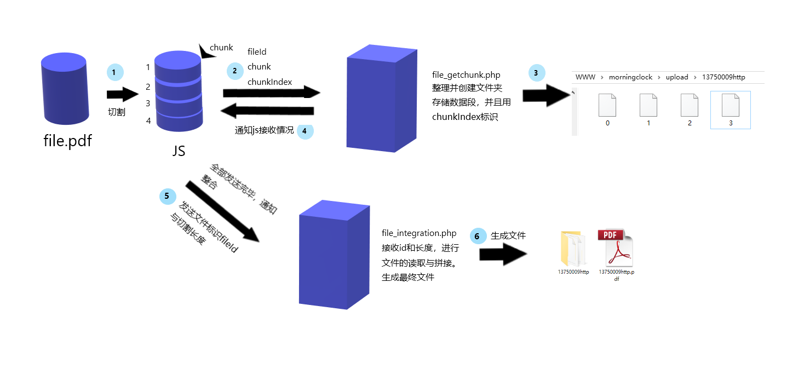

文件/大文件上传功能实现（JS+PHP）
参考博文：掘金-橙红年代 前端大文件上传
本文是学习文件上传后的学习总结文章，从无到有实现文件上传功能，前端小白写的代码不是最优，如果有错误的地方请多多指教，如果本文对你有所帮助，深感荣幸。
近期公司的项目中，涉及到上传大文件的问题，大文件上传用普通表单上传时出现的问题是，无法断点续存，一但中途中断上传，就要重头开始，这很明显不是我们想要的，所以经过一番查询，学习了一下大文件分割上传的方法。并且使用简单的php做服务端处理程序实现一个功能demo，供以后回顾使用。本人也是初出茅庐的前端小白，记录下各种功能的实现总结，代码有错误的地方，请多多指正。
1.简单文件上传
普通表单上传
表单上传是我们经常使用的功能，而且使用起来也是非常简单，我们只需要声明表单内容类型为
enctype="multipart/form-data",表明表单上传文件的二进制数据。<form action="index.php" method="post" enctype="multipart/form-data"> <input type="file" name="myfile" /> <input type="submit" value="上传" /> </form>点击上传按钮，就可以将表单发送到服务器，并使用
index.php接受到对应的表单数据，存入$_GET/$_POST超级全局变量中，我们只需要使用move_uploaded_file方法，将接收到的文件数据，存储起来，就实现了文件上传功能了。$myfile = $_FILES['myfile']; //上传路径 $path = "upload/" . $myfile['name']; if(move_uploaded_file($myfile['tmp_name'], $path)){ echo "上传成功"; } else{ echo "上传失败"; };ajax模拟表单上传文件
当我们有需求，需要异步提交表单或者需要对上传文件做一定修改（例如：裁剪尺寸）时，普通的表单上传就不能满足我们的需求，因为我们无法修改表单的file值，这时候就需要ajax出场了。这里我们使用jQuery使用ajax更方便快捷。
我们需要做如下修改：
HTML我们不需要配置form，只需要配置相应的ID，用于获取DOM元素对象。
<form id="myForm"> <input type="file" name="myfile" id="myFile" /> <input type="submit" value="上传" id="submitForm"/> </form> <script src="http://code.jquery.com/jquery-1.11.1.min.js"></script>JQuery注意，
jQuery的ajax方法，会默认配置一些请求信息，所以我们需要重新配置放置jQuery的默认行为导致数据格式或请求头信息出现问题。这里的
contentType和processData为必须项。$('#submitForm').on('click', function(e){ // 阻止默认表单提交 e.preventDefault(); // 创建表单 // 默认配置了enctype="multipart/form-data" var formData = new FormData(); formData.append('myfile',$('#myFile')[0].files[0]) // 提交表单 $.ajax({ type: "POST", url: 'post.php', data: formData, // 阻止jquery赋予默认属性，使用FormData默认配置enctype="multipart/form-data" contentType: false, // 阻止jquery自动序列化数据 processData: false, success: function(data){ console.log('请求正常',data); } }) })
2.大文件分割上传
简单上传痛点
简单上传，使用表单提交文件到服务器时，如果网络不好或者中途中断，会使文件上传失败，试想一下如果要上传文件很大，当你上传到99%时，突然间中断，又要重新上传，那该有多崩溃，那时你可能电脑的想砸了。
实现思路
大文件上传，实现的方法，就是将上传文件的二进制文件通过分割的形式，逐个上传到服务器，在上传完成后，服务器再对文件进行拼接操作。
为了能识别上传的数据，是哪个文件，我们必须要拥有一个
文件标识符，用于识别接收到的文件数据是属于哪个文件的，以及可以实现避免重复上传，实现秒传功能等。不要忘记由于是异步操作，而且操作的数据段大小不一，会导致整合时无法确认拼接熟悉怒，所以我们需要一个index标识数据段的位置。
通过初步整理，我们就需要以下的参数
- 文件唯一标识符
- 分割后数据段
- 分割数据段的顺序索引值
经过思考，我们可以建立两个处理程序，来分别处理接受chunk数据段和合并chunk数据段。
file_getchunk.php功能：将分割chunk数据，整理并保存，此处我们用文件形式实现。
file_integration.php功能：接收到整合通知，将数据段拼接，并生成文件。
整体流程大致如图：

PHP.ini配置
由于PHP默认配合中，限制了POST与上传的大小，所以我们为了测试，需要修改
php.ini中的默认配置。post_max_size = 50M upload_max_filesize = 50M
talk is cheap,show me the code
HTML<script src="http://code.jquery.com/jquery-1.11.1.min.js"></script> <form id="myForm"> <input type="file" name="myfile" id="myFile" /> <input type="submit" value="上传" id="submitForm"/> </form>JQuery获取文件对象，文件标识符，分割文件，通过ajax发送切割好的blob数据段。
$('#submitForm').on('click', function(e){ // 阻止默认表单提交 e.preventDefault(); var myfile = $('#myFile')[0].files[0]; // 定义文件标识符 var fileId = getFileIdentifier(myfile); // 数据切片 var chunks = fileSlice(myfile); // 发送分割数据段 sendChunk(fileId, chunks); })
生成文件唯一标识
getFileIdentifier()此处可以使用md5，生成文件唯一的md5（相同文件md5相同），作为标识符。这里只初略的处理了一下文件标识。
function getFileIdentifier(file){ // 获取文件标识符 return file.size + file.name; }
分割方法
fileSlice()先将文件使用blob文件继承的方法slice进行切割，生成blob字串。
function fileSlice(file, chunkSize = 1024*1024*0.2){ // 1.初始化数据 var totalSize = file.size; var start = 0; var end = start + chunkSize; var chunks = []; // 2.使用bolb提供的slice方法切片 while(start < totalSize){ var chunk = file.slice(start, end); chunks.push(chunk); start = end; end += chunkSize; } // 3.返回切片组chunk[] return chunks; }发送chunk方法
sendChunk()使用ajax依次发送已经分割好的chunk，并提供对应的数据，请求
file_getchunk.php进行处理。此处task列表，用于保证文件分隔符全部已经完成上传。function sendChunk(id, chunks){ // 逐个提交 // 用于保证ajax发送完毕 var task = []; chunks.forEach(function(chunk, index){ var formData = new FormData(); formData.append('fileId', id); formData.append('myFileChunk', chunk); formData.append('chunkIndex', index); $.ajax({ type: "POST", url: 'file_getchunk.php', data: formData, contentType: false, processData: false, success: function(done){ // 移除已完成任务 task.pop(); console.log(done,' 已完成'); if (task.length === 0) { // 发送完毕，整合文件 console.log('通知整合'); makeFileIntegration(id, chunks.length); } } }) task.push('file Working'); }) }通知整合方法
makeFileIntegration()接收到整合通知，请求
file_integration.php进行文件的整合处理。function makeFileIntegration(id, size){ // 通知已传输完成 $.post( "file_integration.php", { id: id, size: size }, function(data){ console.log(data); } ); }PHP-
file_getchunk.php当PHP监听到请求时，获取对应的数据，生成文件夹，按照
chunkIndex存储数据段。if(!is_dir('upload')){ mkdir('upload', 0777); } $chunk = $_FILES['myFileChunk']; // 文件唯一标识 $fileId = $_POST['fileId']; // 临时文件夹名称 $length = strlen($fileId) - (strlen($fileId) - strpos($fileId, '.')); $filedir = substr($fileId, 0, $length); $chunkIndex = $_POST['chunkIndex']; $filepath = 'upload/' . $filedir; $filename = $filepath . '/' . $chunkIndex; if(!is_dir($filepath)){ mkdir($filepath, 0777); } move_uploaded_file($chunk['tmp_name'], $filename); echo $chunkIndex;PHP-
file_integration.php监听到整合请求，对文件夹下面的所有文件，进行依次拼接，并生成最终还原出来的文件。
$fileId = $_POST['id']; // 临时文件夹名称 $length = strlen($fileId) - (strlen($fileId) - strpos($fileId, '.')); $filedir = substr($fileId, 0, $length); $size = $_POST['size']; $file = './upload/' . $fileId; // 创建最终文件 if(!file_exists($file)){ // 最终文件不存在，创建文件 $myfile = fopen($file, 'w+'); fclose($myfile); } // 用增加方式打开最终文件 $myfile = fopen($file, 'a'); for ($i = 0; $i < $size; $i++) { // 单文件路径 $filePart = 'upload/' . $filedir . '/' . $i; if(file_exists($filePart)){ $chunk = file_get_contents($filePart); // 写入chunk fwrite($myfile, $chunk); } else{ echo "缺少Part$i 文件，请重新上传"; break; } } fclose($myfile); echo "整合完成";
3.更进一步
大文件分割上传功能已经基本实现，但是我们还可以拥有很多优化的地方
1.断点续存。
我们需要的文件已经可以正常的分割上传，服务端也可以正常接收切片，完成数据段切片的合并了。此时我们就可以进一步实现断点续存了。
断点续存，实现方法很简单，我们只需要获取到上传完成的数据段切片信息，就可以判断我们应该从哪个数据段开始继续传输数据。
获取已经完成数据段切片的信息，我们可以使用前端保存或者服务端获取。此处我们使用服务端接口检测，返回数据缺失位置来实现断点续存。
思路整理
我们要在上传前，请求服务端查询出中断时的位置，利用位置信息，筛选上传的数据段切片。
那么我们要增加的逻辑就是：
offset中断位置信息- 查询中断位置接口：
file_get_breakpoint.php
实现
getFileBreakpoint()获取文件断点函数此处要保证ajax执行顺序，才能正确获取offset偏移量，实现思路有很多。此处只使用
jquery提供的将ajax请求变为同步，进行处理。注：同步请求时，success函数返回值不可以直接return，要保存在一个变量中，在ajax请求外return才能生效。
// 获取文件断点 function getFileBreakpoint(id, size){ var offset = ''; $.ajax({ type:"post", url:"file_get_breakpoint.php", data: { id: id, size: size }, async: false, success:function(res){ offset = parseInt(res); } }) return offset; }
- 在`sendChunk()`发送数据前获取`offset`
// 上传前，请求file_integration.php接口获取数据段开始传输的位置
var offset = getFileBreakpoint(id, chunks.length);
- 遍历chunks发送数据段时，增加筛选逻辑
chunks.forEach(function(chunk, index){
// ==============新增=================
// 从offset开始传输
if (index < offset) {
return;
}
// ==============新增=================
var formData = new FormData();
formData.append('fileId', id);
formData.append('myFileChunk', chunk);
formData.append('chunkIndex', index);
$.ajax({
type: "POST",
url: 'file_getchunk.php',
data: formData,
contentType: false,
processData: false,
success: function(done){
task.pop();
console.log(done,' 已完成');
if (task.length === 0) {
console.log('通知整合');
makeFileIntegration(id, chunks.length);
}
}
})
task.push(index+' is Working');
})
- 获取中断位置接口`file_get_breakpoint.php`
这里使用的获取中断位置的逻辑很简单（不是最优），只需要检测文件夹是否存在，再依次检测数据段是否缺失。缺失时返回缺失段的`index`，已存在返回chunks长度`size`，不存在时返回`0`
// 1.检测数据文件是否存在(文件标识，数据段总数)
$fileId = $_POST['id'];
$size = $_POST['size'];
// 临时文件夹名称
$length = strlen($fileId) - (strlen($fileId) - strpos($fileId, '.'));
$filedir = substr($fileId, 0, $length);
// 2.按顺序检测缺失的数据段的位置
// 检测是否存在文件夹
if (is_dir("upload/$filedir")) {
$offset = $size;
// 检测数据段缺失下标
for ($i = 0; $i < $size; $i++) {
$filepath = "upload/$filedir/$i";
if(!file_exists($filepath)){
// 缺失i部分
$offset = $i;
break;
}
}
// 输出偏移量
echo $offset;
}
else {
// 是否存在已合并文件
if(file_exists("upload/$fileId")){
echo $size;
} else{
// 文件尚未上传
echo 0;
}
}
2.文件秒传
文件秒传的概念，按照我的理解，就是在上传文件请求后，服务器端检测数据库中是否存在相同的文件，如果存在相同的文件，就可以告诉用户上传完成了。
此处在获取offset后，增加一个判断就可以实现
var offset = getFileBreakpoint(id, chunks.length); // 增加判断 if(chunks.length === offset) { console.log('文件已经上传完成'); return; }当然，这里仅仅是非常简单的处理，我们还可以使用MD5来作为文件标识符，在在服务器端使用这个标识符是否存在相同文件。
3.MD5检测文件完整性。
通过md5对文件加密，传输到服务器端，服务器端实现合并后对文件再进行一次md5加密，比对两串md5字串是否相同，就可以知道文件传输过程中是否完整。
3.上传完成后，存储数据段文件夹进行删除操作。
我们最后做一步就是将临时文件移除操作，在整合完成后，我们只需要在
file_integration.php接口中，整合完成后，移除文件夹及其下面的所有文件。function deldir($path){ //如果是目录则继续 if(is_dir($path)){ //扫描一个文件夹内的所有文件夹和文件并返回数组 $p = scandir($path); foreach($p as $val){ //排除目录中的.和.. if($val !="." && $val !=".."){ //如果是目录则递归子目录，继续操作 if(is_dir($path.$val)){ //子目录中操作删除文件夹和文件 deldir($path.$val.'/'); //目录清空后删除空文件夹 @rmdir($path.$val.'/'); }else{ //如果是文件直接删除 unlink($path.$val); } } } // 删除文件夹 rmdir($path); } } //删除临时文件夹 deldir("upload/$filedir/");
4.总结
按照上述步骤，可以跟着实现简单上传、大文件分割上传、断点续存等知识，起码下次遇到上传文件，心里也有了点底气。由于本人是前端小白，所以写的代码比较简陋，只是实现了功能，还有许多可以优化的地方，如果代码有误，还望指正。
本博客所有文章除特别声明外，均采用 CC BY-SA 3.0协议 。转载请注明出处！